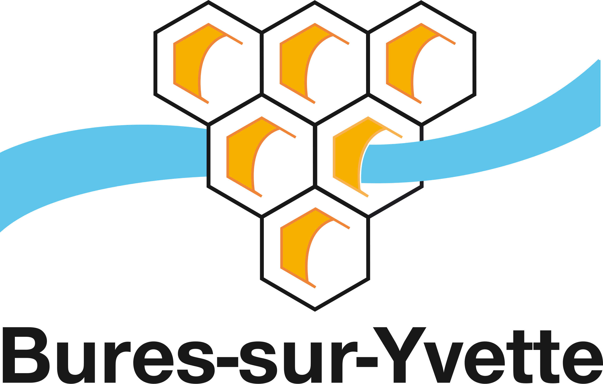

Désembouage à Bures-sur-Yvette (91440)

Retrouver un chauffage performant et durable grâce au désembouage
Avec le temps, les circuits de chauffage s’encrassent à cause des boues, du calcaire et des impuretés. Ces dépôts réduisent la circulation de l’eau chaude, provoquent une baisse d’efficacité et augmentent la consommation d’énergie. À Bures-sur-Yvette, notre entreprise met à votre disposition toute son expertise pour effectuer un désembouage complet et professionnel, garantissant un chauffage performant, durable et économe.
Pourquoi effectuer un désembouage ?
Les boues qui s’accumulent dans un système de chauffage proviennent principalement de la corrosion interne et du calcaire présent dans l’eau. Ces résidus s’accrochent aux parois des tuyaux, obstruent les radiateurs et perturbent la diffusion de la chaleur.
Les signes d’un circuit encrassé sont faciles à identifier :
- Des radiateurs qui chauffent mal ou partiellement ;
- Des bruits d’eau ou de bulles d’air dans les canalisations ;
- Une chaudière qui consomme plus sans chauffer davantage ;
- Une chaleur inégale selon les pièces ;
- Un chauffage plus lent à se stabiliser.
Le désembouage permet d’éliminer ces dépôts et de rétablir une circulation fluide.
Les bénéfices sont immédiats :
- Une meilleure diffusion de la chaleur dans tout le logement ;
- Une réduction de la consommation énergétique (jusqu’à 20 %) ;
- Une prévention efficace des pannes et de la corrosion ;
- Une durée de vie prolongée de votre système de chauffage.
Il est conseillé de procéder à un désembouage tous les 5 à 7 ans, ou dès les premiers signes de perte de performance.
Une entreprise locale à votre service à Bures-sur-Yvette
Depuis plus de dix ans, SPC Santos Plomberie Chauffage intervient dans tout le département de l’Essonne pour entretenir, nettoyer et optimiser les installations de chauffage. Basée à proximité, notre équipe se déplace rapidement à Bures-sur-Yvette et dans les communes environnantes comme Gif-sur-Yvette, Orsay, Les Ulis ou Gometz-le-Châtel.
Notre objectif : vous garantir un chauffage performant, durable et économique grâce à un service rigoureux et professionnel.
Nos atouts :
- Une expertise reconnue dans le domaine du chauffage et de la plomberie ;
- Des techniciens qualifiés et formés aux dernières méthodes de désembouage ;
- Des produits respectueux de vos installations et de l’environnement ;
- Des interventions rapides et soignées, planifiées selon vos disponibilités.
Nos prestations de désembouage à Bures-sur-Yvette
Nous réalisons des prestations complètes sur tous types de systèmes hydrauliques :
- Radiateurs à eau chaude (fonte, acier, aluminium) ;
- Planchers chauffants hydrauliques ;
- Chaudières gaz, fioul ou à condensation ;
- Pompes à chaleur air/eau et systèmes hybrides.
1. Diagnostic complet du circuit
Chaque intervention commence par un bilan précis de votre installation : mesure de la pression, du débit, de la température et de la qualité de l’eau. Ce diagnostic permet de déterminer la méthode de nettoyage la plus adaptée.
2. Nettoyage complet du réseau
Nous utilisons deux techniques principales selon l’état du système :
- Le désembouage mécanique, avec une machine à pression contrôlée pour expulser les boues et les impuretés ;
- Le désembouage chimique doux, à base de produits non corrosifs pour dissoudre les dépôts sans abîmer les canalisations.
3. Traitement préventif
Après le nettoyage, nous injectons un inhibiteur de corrosion afin d’éviter la reformation de boues et de protéger durablement votre réseau.
4. Vérification et remise en service
Une fois le travail terminé, nous testons la circulation de l’eau et la montée en température pour garantir un fonctionnement optimal et homogène.
Pour qui intervenons-nous à Bures-sur-Yvette ?
Nos services s’adressent à :
- Les particuliers, pour leurs maisons ou appartements ;
- Les syndics et copropriétés, pour les installations collectives ;
- Les entreprises, pour leurs bureaux et bâtiments professionnels ;
- Les collectivités locales, pour leurs infrastructures publiques.
Chaque intervention est adaptée à la configuration et à la taille du système de chauffage.
Des tarifs transparents et compétitifs
Chez SPC Désembouage Bures-sur-Yvette, la transparence est une valeur essentielle. Avant toute prestation, nous réalisons un devis gratuit et détaillé, précisant la méthode utilisée, la durée estimée et le coût total de l’intervention.
Nos tarifs sont étudiés pour offrir le meilleur rapport qualité-prix, sans frais cachés. Le désembouage est un investissement rentable, puisqu’il permet de réaliser des économies d’énergie tout en prolongeant la durée de vie de votre installation.
SPC Santos Plomberie Chauffage : un savoir-faire reconnu
Fondée en 2010, SPC Santos Plomberie Chauffage est une entreprise de référence dans le domaine du chauffage et de la plomberie en Essonne. Nous intervenons également dans les départements limitrophes — Seine-et-Marne, Val-de-Marne et Hauts-de-Seine — pour toute prestation d’entretien thermique.
Nos techniciens utilisent un matériel moderne conforme aux normes européennes, garantissant un nettoyage complet, sûr et durable. Notre philosophie : allier technologie, rigueur et proximité pour offrir à chaque client un service de qualité supérieure.
Nos engagements qualité
Choisir SPC Désembouage Bures-sur-Yvette, c’est profiter de :
- Un diagnostic gratuit et personnalisé avant toute intervention ;
- Des produits écologiques adaptés à votre installation ;
- Une intervention rapide et soignée réalisée par des experts ;
- Une garantie de satisfaction sur l’ensemble de nos prestations.
Nous mettons un point d’honneur à restaurer la performance de votre chauffage tout en assurant votre confort et votre tranquillité.
Contactez-nous dès aujourd’hui
Votre chauffage chauffe mal ? Vos radiateurs présentent des zones froides ? Votre chaudière consomme davantage ? Contactez dès maintenant SPC Désembouage Bures-sur-Yvette pour un diagnostic gratuit et une intervention rapide.
📞 Téléphone : 01 69 25 77 54
📍 Adresse : 19 rue Pierre Brossolette, 91700 Sainte Geneviève des Bois
📧 Email : contact@desembouage-91.fr
SPC Désembouage Bures-sur-Yvette, votre partenaire local pour un chauffage plus propre, plus performant et plus économique.
Contactez-nous au 01 69 25 77 54